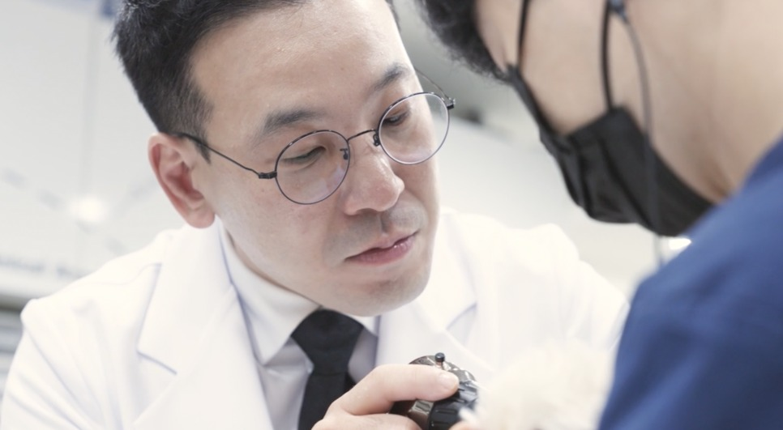

대학을 떠나 진료 현장으로 온 이유
서울대학교 수의과대학을 졸업하고 같은 대학원에서 수의내과학으로 박사 학위를 받았습니다. 서울대 동물병원에서 펠로우와 임상교수를 지낸 뒤 2020년부터 제주대학교 수의과대학에서 수의내과학 교수로 학생을 가르치고 대학 동물병원의 내과 진료를 맡았으며, 2025년에는 동물병원장을 지냈습니다.
대학에서 보낸 시간은 많이 배우고 얻은 시간이었습니다. 다만 해가 갈수록 더 다양한 임상 환경에서 진료해 보고 싶다는 생각이 커졌습니다. 특히 중환자 진료를 밀도 있게 경험하고, 환자와 보호자 곁에서 직접 판단하고 치료하는 역할에 집중하고 싶었습니다. 2025년 10월 교수직을 내려놓고 시그니처 동물의료센터에 합류한 이유입니다.
지금 주로 맡는 환자는 심장질환, 당뇨성 케톤산증, 종양 파열처럼 만성질환이 갑자기 나빠진 경우입니다. 이런 환자는 처음 며칠의 대응이 결과를 좌우합니다. 24시간 응급·중환자 체계와 혈액투석, 수술, 영상의학이 한 건물 안에 있어 단시간에 상태를 끌어올리는 치료가 가능하고, 실제로 예후가 달라지는 경우를 자주 봅니다.
공유된 기준을 바탕으로 이뤄져야 합니다. 뉴스1 인터뷰, 2026년 5월
임상으로 온 지 여섯 달째에 인터뷰에서 "체감상 3년은 일한 느낌"이라고 말했습니다. 협진 구조가 잘 갖춰져 있고 의료진 사이의 호흡이 좋아서, 이런 환경에서 진료하는 일이 보람 있습니다. 앞으로도 임상과 학술을 같이 가져가려 합니다.

생존 가능성 7~8%라던 열한 살 짜장이
2026년 3월, 급성 췌장염에서 시작해 급성 신부전으로 번지고 담낭 파열까지 의심되던 열한 살 강아지가 여러 병원을 거쳐 왔습니다. 하루 이틀 안에 사망할 수 있다는 말을 들은 상태였습니다.
투석으로 전신 상태를 끌어올려 마취가 가능한 수준까지 만든 뒤 고위험 수술을 견뎌야 하는 치료였습니다. 2주 입원 동안 투석을 세 차례 진행하고 수술을 마쳤고, 두 달이 채 지나지 않아 주요 수치가 정상 범위로 돌아왔습니다.
의료진 입장에서도 큰 기대를 하기 어려운 상태였지만, 투석과 수술, 집중 치료를 동시에 적용할 수 있는 환경이 있었기에 끝까지 시도할 수 있었던 사례입니다.